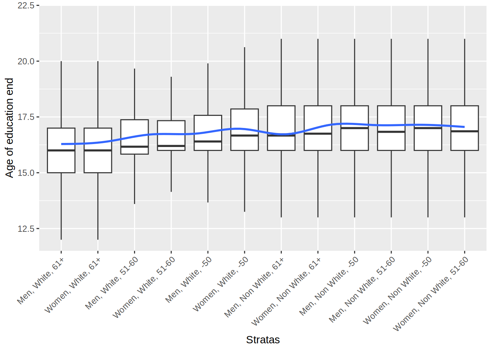
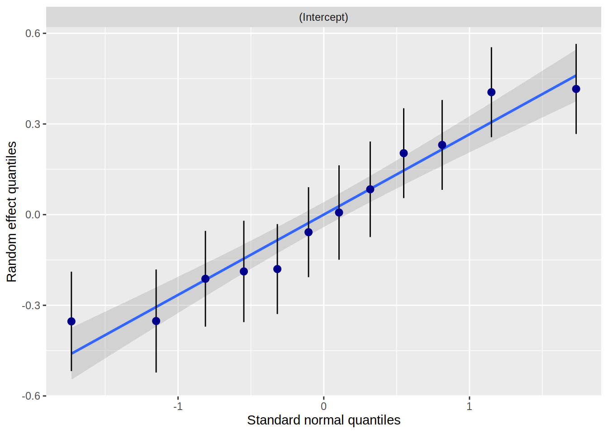
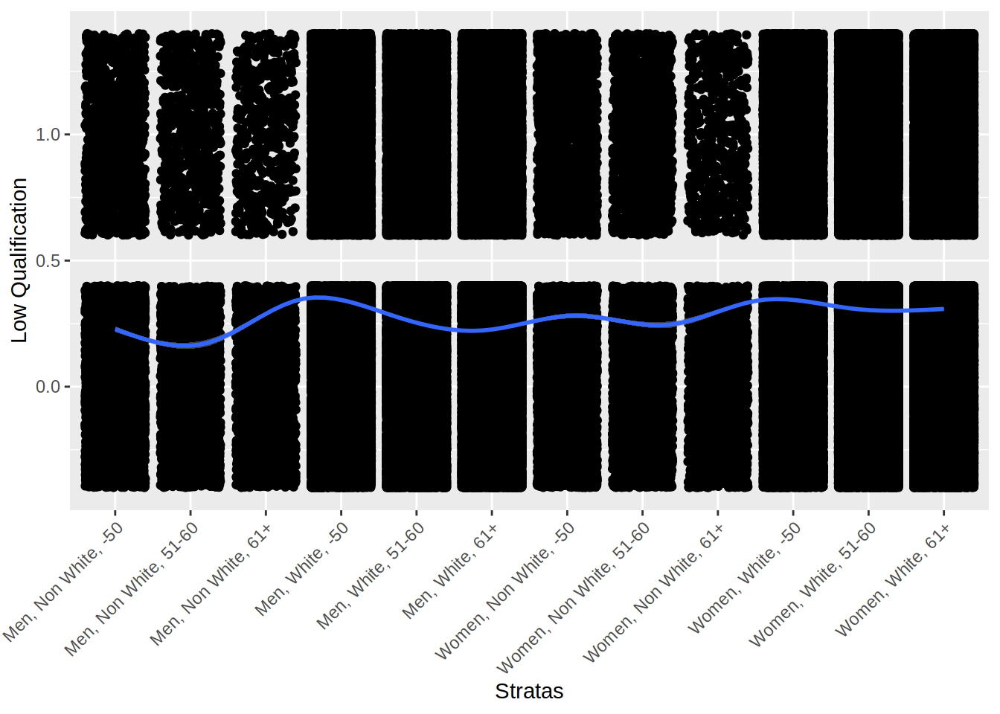

4 Multilevels models: Simple example - continous outcome
4.1 Description
mydata$AgeEducEnd_class <- as.factor(ifelse(mydata$AgeEducEnd < mean(mydata$AgeEducEnd),
"Below mean", "Above mean"))
table1::table1(~ Sex + Age_class + Ethnicity | AgeEducEnd_class,
data=mydata,
overall=c(left="Total"),
caption="Description by age of education end")| Total (N=502461) |
Above mean (N=199714) |
Below mean (N=302747) |
|
|---|---|---|---|
| Sex | |||
| Women | 273354 (54.4%) | 110322 (55.2%) | 163032 (53.9%) |
| Men | 229107 (45.6%) | 89392 (44.8%) | 139715 (46.1%) |
| Age_class | |||
| -50 | 132145 (26.3%) | 62549 (31.3%) | 69596 (23.0%) |
| 51-60 | 177222 (35.3%) | 73933 (37.0%) | 103289 (34.1%) |
| 61+ | 193094 (38.4%) | 63232 (31.7%) | 129862 (42.9%) |
| Ethnicity | |||
| Non White | 27037 (5.4%) | 14679 (7.4%) | 12358 (4.1%) |
| White | 475424 (94.6%) | 185035 (92.7%) | 290389 (95.9%) |
ggplot(data = mydata) +
geom_boxplot(aes(x = fct_reorder(strata,AgeEducEnd,.fun='median'),
y = AgeEducEnd),outlier.shape = NA) +
geom_smooth(aes(x = as.numeric(fct_reorder(strata,AgeEducEnd,.fun='median')),
y = AgeEducEnd)) +
labs(x = "Stratas", y = "Age of education end") +
theme(axis.text.x = element_text(angle = 45, vjust=1, hjust=1))+
scale_y_continuous(limits = c(12,22))
4.2 The null model (only strata)
# multilevel model
m_null <- glmmTMB(Qualification ~ 1 + (1 | strata),
data = mydata,
family = binomial)
# intercept varies according to the stratum
sjPlot::plot_model(m_null, type = "diag")## $strata## `geom_smooth()` using formula = 'y ~ x'
ggplot(data = mydata) +
geom_jitter(aes(x = fct_reorder(strata,as.numeric(Qualification),.fun='median'),
y = as.numeric(Qualification)-1)) +
geom_smooth(aes(x = as.numeric(fct_reorder(strata,as.numeric(Qualification),.fun='median')),
y = as.numeric(Qualification)-1)) +
labs(x = "Stratas", y = "Low Qualification") +
theme(axis.text.x = element_text(angle = 45, vjust=1, hjust=1))## `geom_smooth()` using method = 'gam' and formula = 'y ~ s(x, bs = "cs")'
# models where we add each category one by one
m_gender <- glmmTMB(Qualification ~ Sex + (1 | strata), data = mydata, family=binomial)
m_ethnicity <- glmmTMB(Qualification ~ Ethnicity + (1 | strata), data = mydata, family=binomial)
m_age <- glmmTMB(Qualification ~ Age_class + (1 | strata), data = mydata, family=binomial)